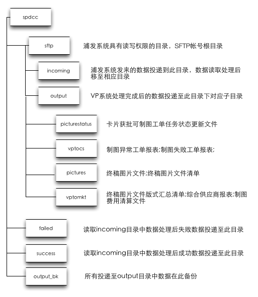
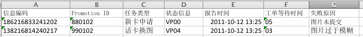
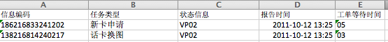
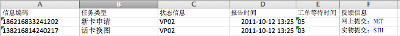
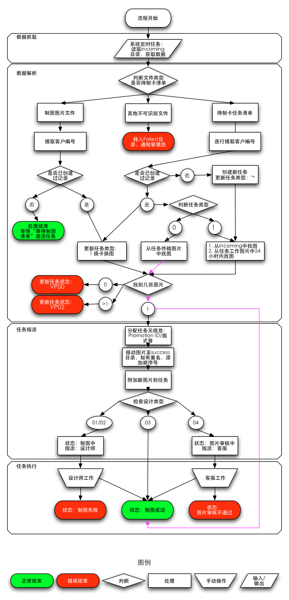

Drafted by: Alex Chien
Participants: Gloria, Amy, Danqing, Xiaomei, Zack
Version: 2.0
Last Modified at:
01/05/2012 15:32
VP放提供SFTP服务器，并提供浦发访问帐号。SFTP服务器上提供2个目录, incoming 及 output，浦发对这两个目录具有读写权利。
incoming: 浦发发送给VP的卡制作相关物料文件、清单保存在此目录
output: VP向浦发提交的卡制作物料、回执、报告保存在此目录。浦发完成读取后，可清空文件夹。

唯一编码：唯一编码是识别客户的唯一标识，共计26位，由11位手机号＋4位生日月日＋11位占位半角空格构成。其中有效字段长15位。在数据交互时，应用唯一编码时图片文件命名编码使用15位有效唯一编码；其他文本文件及报告中均使用26位唯一编码（含半角空格占位符，但状态变更任务清单除外）。
| 名称 | 数据长度 | 示例 | 备注 | |
| 唯一编码 | 手机号 | 11 | 18621683382 | |
| 生日月日 | 4 | 1202 | ||
| 占位符 | 11 | ¬¬¬¬¬¬¬¬¬¬¬ | ¬ 代表半角空格 | |
| 示例 | 文本文件中引用：186216833821202¬¬¬¬¬¬¬¬¬¬¬ 图片命名中引用：186216833821202 |
|||
Promotion ID：是区分可供客户选择的四种大类设计方式、7种设计要求、不同提交图片的渠道（网上提交、实物提交）。Promotion ID也在VP制图成本清算报表中有识别不同计价方式的作用。由3个字段信息构成。定长6位
| 名称 | 数据长度 | 示例 | 备注 | |
| Promotion ID | 来源标记 | 2 | 88 | 网站上传或实物照片 |
| 设计类型 | 2 | 01 | 手绘Q图版、场景版等 | |
| 设计效果 | 2 | 02 | 设计类型下具体的设计效果，如手绘Q图版下的卡通彩色，见附录，图库、场景版时设计效果固定00。 | |
| 示例 | 880102 （含义：客户从网站上传图片，制作要求手绘Q图卡通黑白） | |||
Fee Code：系统保留字，2位定长，任意类型。如无信息，以半角空格占位。一期中暂作为留空，今后可以根据指定规则，自动生成对于Promotion ID的费用标志。
版面格式编号：是识别客户选择横板或者竖版的标志。1为横板，2为竖版。
图库图片编号：是指当客户选择一大类设计方式（主要是场景背景和图库自选）中有多个图片可供选择的情况下，识别客户选择的编号。
制图图片文件：
终稿图片文件名编码
信息编码（或称：卡片获批可制图工单码）
浦发通过SFTP向VP系统投递制图图片文件、卡片获批可制图工单文件进行任务通知。VP系统根据收到的任务需求进行审核及后续制图，并提交终稿图片文件清单（附带终稿图片文件）、制图失败工单报表 、卡片获批可制图工单任务状态更新文件，以及各类报表（日、周、月）。
浦发数据投递至 incoming 目录，VP处理完数据后将清空该目录；VP返回的数据投递至 output 目录，由浦发定时取回（成功取回后删除文件）。
| 文件名 | 作用 | 传输频率 | 发送方 | 接收方 | 文件类型 | 后缀名 | 投递目录 示例 |
| 制图图片文件 | 客户提供的（或通过网站上传，或通过实物照片提交）的原始图片，供VP制图使用。文件名进过编码嵌入唯一编码、Promotion ID及版式代码。 | 每小时 | 浦发 | VP | JPEG | jpg | /incoming/ 186216833241202880102100.jpg |
| 卡片获批可制图工单文件 | 通过审核的客户清单，标记指定唯一编码客户卡申请通过审核，并指定该卡申请制作的任务类型。 | 每日07:00，含昨日数据 | 浦发 | VP | TXT | 无 | /incoming/ 0310-SKTWAIT-20111012 |
| 终稿图片文件 | 设计师制图后生成的成果文件，文件名进过编码嵌入唯一编码、Promotion ID，版式代码及Fee Code。 | 每小时 | VP | 浦发 | JPEG | jpg | /output/pictures/ 1862168332412021.jpg |
| 终稿图片文件清单 | 已经制图成功的任务清单，返回对应任务的唯一编码，Promotion ID及Fee Code。每一条成功任务附带终稿图片文件。 | 每日19:00，含前24小时数据 | VP | 浦发 | TXT | 无 | /output/pictures/ 0310-SKTRSP-20111012 |
| 终稿图片文件版式汇总清单 | 当日允许制卡的任务，根据版式信息提供的统计报表。 | 每日19:00，含前24小时数据 | VP | 浦发 | TXT | 无 | /output/vptomkt/ 0310-SKTRSPLAYOUT-20111012 |
| 卡片获批可制图工单任务状态更新文件 | 通过审核的客户清单，标记指定唯一编码客户卡申请通过审核，并指定该卡申请制作的任务类型。每日投递一次。 | 每日05:00，含昨日数据 | VP | 浦发 | TXT | txt | /output/picturestatus/ 0310-TASKSTATUS-20111012.txt |
| 制图任务失败的任务清单（VP00/04/06），提交浦发进行后续处理。 | 每日05:00，含昨日数据 | VP | 浦发 | EXCEL | xls | /output/vptocs/ 0310-TASKFAILED-20111012.xls |
|
| 制图异常工单报表 | 制图任务异常的任务清单（VP02），提交浦发进行后续处理。 | 每日05:00，含昨日数据 | VP | 浦发 | EXCEL | xls | /output/vptocs/ 0310-TASKEXCEPTION-20111012.xls |
| 制图异常工单报表结果回复 | 制图任务异常的任务的处理回复。 | 每日 | 浦发 | VP | EXCEL | xls | /incoming/ 0310-TASKEXCEPTION-REPLY-20111012.xls |
| 综合供应商报表 | 综合供应商数据统计报表。 | 周、月（人工传递） | VP | 浦发 | EXCEL | xls | /output/vptomkt/ VP-STATS-20111012.xls VP-STATS-201110.xls |
| 制图费用清算文件 | 制图费用清算。 | 周、月（人工传递） | VP | 浦发 | EXCEL | xls | /output/vptomkt/ VP-SETTLE-WEEKLY-20111012.xls VP-SETTLE-MONTHLY-201110.xls |
所在目录：sftp/incoming/
制图图片每日每小时投递一次，制图图片文件需提供以下信息，将这些信息进行序列化（简单的值字串拼合）后进行文件命名。序列化信息由以下几个部分组成：
| 分组 | 名称 | 数据长度 | 示例 | 类型 | 可选？ | 备注 |
| 唯一编码 | 手机号码 | 11 | 18621683324 | 字符串 | 否 | 手机号码 |
| 生日月日 | 4 | 1202 | 字符串 | 否 | 生日月日 | |
| Promotion ID | 来源标记 | 2 | 88 | 枚举值 | 否 | 网站上传或实物照片 |
| 设计类型 | 2 | 01 | 枚举值 | 否 | 手绘Q图版、场景版等 | |
| 设计效果 | 2 | 02 | 枚举值 | 否 | 设计类型下具体的设计效果，如手绘Q图版下的卡通彩色，见附录，设计效果表应具有联合主键（设计类型ID和设计效果ID） | |
| 版式类型 | 版式类型 | 1 | 1 | 枚举值 | 否 | 1 横版蓝色LOGO、2 横版白色LOGO、3 竖版蓝色LOGO、4 竖版白色LOGO |
| 图库编号 | 图库编号 | 2 | 01 | 枚举值 | 否 | 当设计类型为图库自选时有意义，其他类型时均为00 |
| 示例： | 186216833241202880102100.jpg | |||||
| 注： | 图片类型为标准JPEG图片文件，图片后缀名：jpg。 | |||||
序列化后文件名长度 24 定长。
VP系统在检测到有新制图图片文件时，会根据图片名内嵌唯一编码检索数据库：
所在目录：sftp/incoming/
任务清单每日每日07:00投递一次（含昨日数据），命名规则0310-SKTWAIT-YYYYMMDD（0310为银行代号，常量），文本文件无后缀名。内容每行写入一条任务，罗列当日卡片获批可制图工单文件。
举例：2011年10月12日任务清单，文件名为 0310-SKTWAIT-20111012
每行代表一条待制卡任务，序列化信息由以下几个部分组成：
| 分组 | 名称 | 数据长度 | 示例 | 类型 | 可选？ | 备注 |
| 唯一编码 | 手机号码 | 11 | 18621683324 | 字符串 | 否 | 手机号码 |
| 生日月日 | 4 | 1202 | 字符串 | 否 | 生日月日 | |
| 占位符 | 11 | ¬¬¬¬¬¬¬¬¬¬¬ | 字符串 | 否 | 半角空格占位符 | |
| 更换图片标志 | 任务类型 | 1 | 1 | 枚举值 | 否 | 空格：表示新申请卡片 0：表示换卡不需要更换图片 1：表示换卡需要更换图片 |
| 示例： | 186216833241202¬¬¬¬¬¬¬¬¬¬¬1 | |||||
序列化后每行任务信息长度 27 定长。
文件内容示例
186216833241202¬¬¬¬¬¬¬¬¬¬¬¬ 186216833241202¬¬¬¬¬¬¬¬¬¬¬0 186216833241202¬¬¬¬¬¬¬¬¬¬¬1
所在目录：sftp/output/pictures/
任务清单每日19:00投递一次，包含数据为前一天19:00至当日19:00期间制图成功的任务清单，命名规则0310-SKTRSP-YYYYMMDD（0310为银行代号，常量），文本文件无后缀名。内容每行写入一条任务，罗列当期终稿图片文件清单。任务清单附带制图成果图片文件，与清单中列举任务一一对应（终稿图片文件名可从任务信息中提取，详细见终稿图片文件）。
举例：2011年10月12日终稿图片文件清单，文件名为 0310-SKTRSP-20111012
每行代表一条允许制卡任务，序列化信息由以下几个部分组成：
| 分组 | 名称 | 数据长度 | 示例 | 类型 | 可选？ | 备注 |
| 唯一编码 | 手机号码 | 11 | 18621683324 | 字符串 | 否 | 手机号码 |
| 生日月日 | 4 | 1202 | 字符串 | 否 | 生日月日 | |
| 占位符 | 11 | ¬¬¬¬¬¬¬¬¬¬¬ | 字符串 | 否 | 半角空格占位符 | |
| Promotion ID | 来源标记 | 2 | 88 | 枚举值 | 否 | 网站上传或实物照片 |
| 设计类型 | 2 | 01 | 枚举值 | 否 | 手绘Q图版、场景版等 | |
| 设计效果 | 2 | 02 | 枚举值 | 否 | 设计类型下具体的设计效果，如手绘Q图版下的卡通彩色，见附录，设计效果表应具有联合主键（设计类型ID和设计效果ID） | |
| Fee Code | Fee Code | 2 | ¬¬ | 枚举值 | 否 | 根据Promotion ID规则使用，系统当前无Fee Code规则，暂无Fee Code信息，以2位半角空格占位 |
| 示例： | 186216833241202¬¬¬¬¬¬¬¬¬¬¬880102¬¬ | |||||
序列化后每行任务信息长度 34 定长。
解析后，创建制图任务的开始时间（创建时间）按“允许任务清单”文件名中的日期设定。
文件内容示例
186216833241202¬¬¬¬¬¬¬¬¬¬¬8801021¬¬ 138216814240217¬¬¬¬¬¬¬¬¬¬¬9904002¬¬
所在目录：sftp/output/vptomkt/
任务清单每日19:00投递一次，包含数据为前一天19:00至当日19:00期间制图成功的任务清单，命名规则0310-SKTRSPLAYOUT-YYYYMMDD（0310为银行代号，常量），文本文件无后缀名。内容包含当日允许制图任务的版式汇总信息。
举例：2011年10月12日终稿图片文件清单，文件名为 0310-SKTRSPLAYOUT-20111012
每行一条版式类型编号及数量，序列化信息由以下几个部分组成：
| 分组 | 名称 | 数据长度 | 示例 | 类型 | 可选？ | 备注 |
| 版式类型编号 | 版式类型 | 1 | 1 | 枚举值 | 否 | 0 默认版式、1 横版蓝色LOGO、2 横版白色LOGO、3 竖版蓝色LOGO、4 竖版白色LOGO |
| 数量 | 数量 | 不限 | 121 | 整型 | 否 | 版式类型下允许制图任务数量 |
| 示例： | 121 （横版21条任务） | |||||
超时后使用默认版面出图的任务，在汇总时需要单独列出，使用版式类型编号0。
文件内容示例
013 121 231 304 407
所在目录：sftp/output/pictures/
终稿图片文件每日每小时投递一次，当日19:00生成终稿图片文件清单文件。成果图片文件需提供以下信息，将这些信息进行序列化（简单的值字串拼合）后进行文件命名。序列化信息由以下几个部分组成：
| 分组 | 名称 | 数据长度 | 示例 | 类型 | 可选？ | 备注 |
| 唯一编码 | 手机号码 | 11 | 18621683324 | 字符串 | 否 | 手机号码 |
| 生日月日 | 4 | 1202 | 字符串 | 否 | 生日月日 | |
| 版式类型 | 版式类型 | 1 | 1 | 枚举值 | 否 | 0 默认版式、1 横版蓝色LOGO、2 横版白色LOGO、3 竖版蓝色LOGO、4 竖版白色LOGO |
| 示例： | 1862168332412021.jpg | |||||
| 注： | 图片类型为标准JPEG图片文件，图片后缀名：jpg。 | |||||
序列化后文件名长度 16 定长。
VP系统在获取终稿图片文件清单后，遍历列举的任务列表提取对应制图文件时，需要对文件名进行简单处理。即任务信息中提取15位唯一编码＋版式类型＋.jpg后缀名即为对应的终稿图片文件。
所在目录：sftp/output/vptocs/
制图失败工单报表每日05:00投递一份（含昨日数据），命名规则0310-TASKFAILED-YYYYMMDD.xls（0310为银行代号，常量），EXCEL文件，后缀名xls。内容每行写入一条任务，罗列截止当日所有失败的任务清单（VP00图片未提交、VP04审核失败及VP06制图失败的任务集合）。
举例：2011年10月12日制图失败工单报表 ，文件名为 0310-TASKFAILED-20111012.xls
每行代表一条审核失败任务，序列化信息由以下几个部分组成：
| 分组 | 名称 | 数据长度 | 示例 | 类型 | 可选？ | 备注 |
| 唯一编码 | 手机号码 | 11 | 18621683324 | 字符串 | 否 | 手机号码 |
| 生日月日 | 4 | 1202 | 字符串 | 否 | 生日月日 | |
| 占位符 | 11 | ¬¬¬¬¬¬¬¬¬¬¬ | 字符串 | 否 | 半角空格占位符 | |
| Promotion ID | 来源标记 | 2 | 88 | 枚举值 | 否 | 网站上传或实物照片 |
| 设计类型 | 2 | 01 | 枚举值 | 否 | 手绘Q图版、场景版等 | |
| 设计效果 | 2 | 02 | 枚举值 | 否 | 设计类型下具体的设计效果，如手绘Q图版下的卡通彩色，见附录，设计效果表应具有联合主键（设计类型ID和设计效果ID） | |
| 任务类型 | 任务类型 | 任意 | 新卡申请 | 字符串 | 否 | 任务类型：新卡申请，换卡换图，换卡不换图 |
| 任务状态 | 任务状态 | 任意 | VP00 | 枚举值 | 否 | 任务当前状态代码 |
| 报告时间 | 报告时间 | 任意 | 2011-10-12 13:30:23 | 字符串 | 否 | 系统报告任务失败的初始时间 |
| 工单等待时间 | 工单等待时间 | 2 | 01 | 字符串 | 否 | 从任务创建日（卡申请通过审核）起在制卡系统中工单等待时间。不足10天十位数补0，超过99天为99。 |
| 失败原因 | 失败原因 | 任意 | 图片未上传 | 字符串 | 是 |
文件内容示例 （下载）

所在目录：sftp/output/vptocs/
制图异常工单报表每日05:00投递一份（含昨日数据），命名规则0310-TASKEXCEPTION-YYYYMMDD（0310为银行代号，常量），EXCEL文件，后缀名xls。内容每行写入一条任务，罗列截止当日VP02（审核失败，收到多张照片）的任务清单。
异常工单实际特指VP02(审核失败，收到多张照片)这种异常情况。指在获得“卡片获批可制图工单文件”清单时，查找获批卡片唯一编号对应的制图文件时，找到2张图片。这往往是由于客户在提交申请照片时，即从网上提交，同时也提交了实物照片，导致同一个唯一编码下有不同来源的图片，它们的设计需求可能相同可能不同。这导致系统或者人工无法判断客户的真实意愿。发生该意外时，向浦发客户提交异常工单报表，期望获得“制图异常工单报表结果回复”，得到客户的选择，从而由VP项目经理在系统中手动为该任务选择适用制图文件。
举例：2011年10月12日制图异常工单报表 ，文件名为 0310-TASKEXCEPTION-20111012.xls
每行代表一条异常任务，序列化信息由以下几个部分组成：
| 分组 | 名称 | 数据长度 | 示例 | 类型 | 可选？ | 备注 |
| 唯一编码 | 手机号码 | 11 | 18621683324 | 字符串 | 否 | 手机号码 |
| 生日月日 | 4 | 1202 | 字符串 | 否 | 生日月日 | |
| 占位符 | 11 | ¬¬¬¬¬¬¬¬¬¬¬ | 字符串 | 否 | 半角空格占位符 | |
| 任务类型 | 任务类型 | 任意 | 新卡申请 | 字符串 | 否 | 任务类型：新卡申请，换卡换图，换卡不换图 |
| 任务状态 | 任务状态 | 4 | VP02 | 枚举值 | 否 | 任务当前状态代码 |
| 报告时间 | 报告时间 | 任意 | 2011-10-12 13:30:23 | 字符串 | 否 | 系统报告任务失败的初始时间 |
| 工单等待时间 | 工单等待时间 | 2 | 01 | 字符串 | 否 | 从任务创建日（卡申请通过审核）起在制卡系统中工单等待时间。不足10天十位数补0，超过99天为99。 |
文件内容示例 （下载）

所在目录：sftp/incoming/
制图异常工单报表结果回复，每日由人工递送一份，以电子邮件形式发送给VP项目经理，作为指定日期异常工单的处理回复，命名规则0310-TASKEXCEPTION-REPLY-YYYYMMDD（0310为银行代号，常量），EXCEL文件，后缀名xls。内容每行写入一条异常任务及处理回复。由VP项目经理手动在系统中为异常任务指定客户选择的制图文件。
举例：2011年10月12日制图异常工单报表 ，文件名为 0310-TASKEXCEPTION-REPLY-20111012.xls
每行代表一条异常任务处理回复，序列化信息由以下几个部分组成：
| 分组 | 名称 | 数据长度 | 示例 | 类型 | 可选？ | 备注 |
| 唯一编码 | 手机号码 | 11 | 18621683324 | 字符串 | 否 | 手机号码 |
| 生日月日 | 4 | 1202 | 字符串 | 否 | 生日月日 | |
| 占位符 | 11 | ¬¬¬¬¬¬¬¬¬¬¬ | 字符串 | 否 | 半角空格占位符 | |
| 任务类型 | 任务类型 | 任意 | 新卡申请 | 字符串 | 否 | 任务类型：新卡申请，换卡换图，换卡不换图 |
| 任务状态 | 任务状态 | 4 | VP00 | 枚举值 | 否 | 任务当前状态代码 |
| 报告时间 | 报告时间 | 任意 | 2011-10-12 13:30:23 | 字符串 | 否 | 系统报告任务失败的初始时间 |
| 工单等待时间 | 工单等待时间 | 2 | 01 | 字符串 | 否 | 从任务创建日（卡申请通过审核）起在制卡系统中工单等待天数。不足10天十位数补0，超过99天为99。 |
| 反馈信息 | 反馈信息 | 任意 | 网上提交：NET | 字符串 | 是 | 对异常任务的处理回复 |
文件内容示例 （下载）

所在目录：sftp/output/picturestatus/
卡片获批可制图工单任务状态更新文件每日05:00投递一份（含昨日数据），命名规则0310-TASKSTATUS-YYYYMMDD（0310为银行代号，常量），文本文件，后缀名txt。内容每行写入一条任务，罗列卡片获批可制图工单任务状态更新文件，数据集包含在当日任务状态发生过变迁的所有任务。
举例：2011年10月12日制图失败工单报表 ，文件名为 0310-TASKSTATUS-20111012.txt
每行代表一条审核失败任务，序列化信息由以下几个部分组成：
| 分组 | 名称 | 数据长度 | 示例 | 类型 | 可选？ | 备注 |
| 唯一编码 | 手机号码 | 11 | 18621683324 | 字符串 | 否 | 手机号码 |
| 生日月日 | 4 | 1202 | 字符串 | 否 | 生日月日 | |
| 任务状态 | 任务状态 | 4 | VP03 | 枚举值 | 否 | 任务当前状态代码 |
序列化任务信息不包含失败原因字符长度为 19 ，失败原因任意长度。
文件内容示例
186216833241202VP0105 138216814240217VP0302
所在目录：sftp/output/vptomkt/
报告包括以下几种类型：
在“任务状态”中列举的各种任务状态为制图任务在VP系统中流转时可能被赋予的全部状态值。这些状态中有的为初始状态，有的为中间状态，有的则为终结状态。终结状态又分为成功结束及失败结束两种类型。成功结束的任务除非重新被激活（浦发发起换图任务），一般即为任务终结；失败结束的任务往往会在得到进一步反馈后会被重新指派并重新流转。任务状态的终结类型如下表：
| ID | 含义 | 生命期 | 所属报告 | 忍耐期限(T+x) |
| VP00 | 图片未提交 | 失败结束 | 制图失败工单报表 | T+10 |
| VP01 | 待审核 | 初始状态 | ||
| VP02 | 审核失败，收到多张照片 | 失败结束 | 制图异常工单报表 | T+10 |
| VP03 | 图片审核中 | 中间状态 | ||
| VP04 | 图片审核不通过 | 失败结束 | 制图失败工单报表 | T+10 |
| VP05 | 制图中 | 中间状态 | ||
| VP06 | 制图失败 | 失败结束 | 制图失败工单报表 | T+10 |
| VP07 | 制图成功 | 成功结束 | 终稿图片文件清单 终稿图片文件版式汇总清单 |
|
| VP08 | 制图成功，使用默认图 | 成功结束 | 终稿图片文件清单 终稿图片文件版式汇总清单 |
失败结束的任务会在制图失败/异常报表中得到呈现，通过得到的反馈及浦发后续的数据跟进，对任务信息进行更新，从而最终将任务转换为成功结束。但在某些情况下，失败/异常任务一直得不到跟进处理（如客户迟迟不提供反馈或上传更新的图片）时，失败任务将永久留在系统中并不断在错误/异常报告中出现，而且卡片也一直无法制作发放，因此对每种失败结束的任务定义了忍耐期限(T+x)，当任务存续时间超过该设置，则任务自动标记为成功结束，适用默认卡面设计参数进行制作（版式类型更新为0）。为了与常规成功结束的任务有所区分，适用VP08状态值。这里的T是任务创建日，即任务第一次在“卡片获批可制图工单文件”中以新卡申请状态出现时的日期。x是值在任务创建日开始到现在的天数。目前所有忍耐期限均为10天（工作日，去除法定节假日）。
| ID | 含义 |
| ¬ | 新卡申请 |
| 0 | 换卡换图 |
| 1 | 换卡不换图 |
| ID | 含义 |
| 88 | 网站上传 |
| 99 | 实物照片 |
| ID | 含义 |
| 01 | 手绘Q图版 |
| 02 | 场景版 |
| 03 | 图库自选版 |
| 04 | 客户上传版 |
| 设计类型ID | 设计效果ID | 含义 |
| 01 | 01 | 手绘Q图卡通彩色 |
| 01 | 02 | 手绘Q图卡通黑白 |
| 01 | 03 | 手绘Q图写实彩色 |
| 01 | 04 | 手绘Q图写实黑白 |
| 02 | 01 | 场景1 |
| 02 | 02 | 场景2 |
| 02 | n+1 | 场景n+1 |
| 03 | 01 | 图库1 |
| 03 | 02 | 图库2 |
| 03 | n+1 | 图库n+1 |
| 04 | 00 | 客户图片 |
| ID | 含义 |
| 0 | 默认版式 |
| 1 | 横版蓝色LOGO |
| 2 | 横版白色LOGO |
| 3 | 竖版蓝色LOGO |
| 4 | 竖版白色LOGO |
| ID | 含义 |
| VP00 | 图片未提交 |
| VP01 | 待审核 |
| VP02 | 审核失败，收到多张照片 |
| VP03 | 图片审核中 |
| VP04 | 图片审核不通过 |
| VP05 | 制图中 |
| VP06 | 制图失败 |
| VP07 | 制图成功 |
| VP08 | 制图成功，使用默认图 |
| ID | 含义 |
| 01 | Fee Code 1 |
| 02 | Fee Code 2 |
